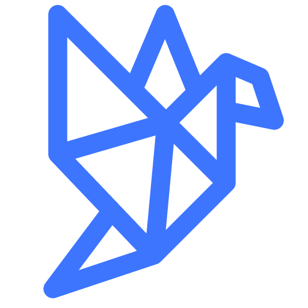

Anatoly Scherbakov | CV

Key Expertise
- Design and architecture of business automation software
- Its implementation in Python programming language
- Code review, peer programming
- Keeping code clean & maintainable
Currently Software Developer at Datafold

Creating solutions to make data engineers' life better.
Research
Independent researcher/engineer in the field of Semantic Web & Linked Data, see Projects for more details.
Technologies
Python
mypy flake8 pydantic click typer fastapi pandas ariadne flask django
Storage
postgresql redis clickhouse neo4j redshift
Cloud
lambda s3 ec2 ecs rds sqs stepfunctions eventbridge terraform
Linked Data
rdf rdfs owl sparql rdflib owl-rl json-ld yaml-ld
Rust
A little bit of Rust programming
Tools
git linear jira pycharm vscode mkdocs
Career
2012 … 2022 Senior Software Developer & Team Lead
Recall Masters Inc (California, US) — An Automotive Safety Company — recallmasters.com
Implemented the first MVP and, subsequently, the full fledged automation app on Django to support the company's business process. Built the internal development department supporting the system and moving forward together with the growing business. Handling the transfer from the monolith application to microservices based system.
2011 … 2014 Software Developer
Vboost Inc (California, US) — An Automotive Marketing Company — vboost.com
Built an MVP and then the full scaled business automation system on Python/Django. Invited developers and formed a small dev team to support the project.
2012 Freelance
odesk.com (now upwork.com)
A number of projects, mostly in Python and Django.
2008 … 2011 Web Developer
OngNet Inc (Gorno-Altaysk, Russia) — Region scale broadband internet provider
Company website (in PHP and subsequently Python). Internal automation for billing system and routing.
2007 … 2013 University tudent
Tomsk University of Control Systems and Microelectronics
- Major: Applied Computer Science in Economics
- Degree: specialist/engineer, with honors
- Thesis: Discrete Event Simulation of Business Processes
- Kind of childish one, actually
- Online education